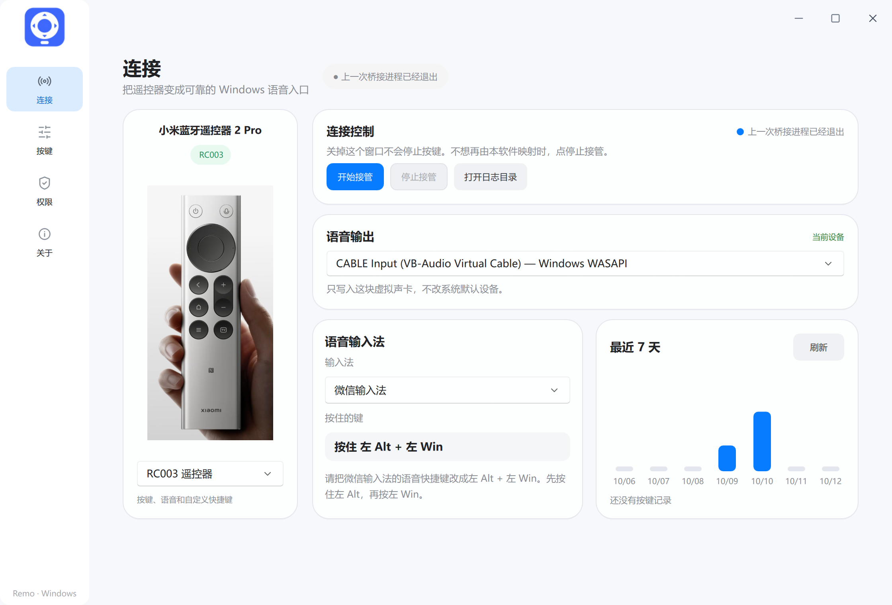
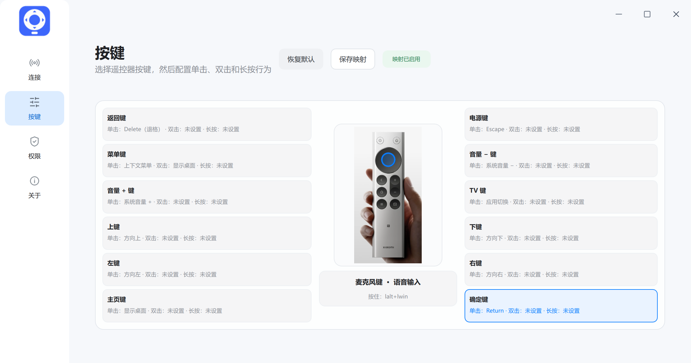

13 键自由映射
每个普通按键都能分别设置单击、双击和长按的动作。设置窗口里有一张遥控器图，选哪个键就改哪个键。
能做什么
Remo 在后台运行，负责蓝牙连接、按键翻译和语音转发。
每个普通按键都能分别设置单击、双击和长按的动作。设置窗口里有一张遥控器图，选哪个键就改哪个键。
按住麦克风键说话，Remo 把遥控器的声音送进虚拟麦克风，同时按下输入法的语音快捷键，文字直接出现在光标处。
按键只从这支 RC003 读取，不会把电脑键盘的输入算进去。语音只写入虚拟声卡，不改你的系统默认音频设备。
后台服务随 Windows 启动，遥控器休眠或断开后会自动重连，不用每次手动打开软件。
按下遥控器上的键，设置窗口里对应的按键会立刻高亮。还能看到最近 7 天的按键统计，配置有没有生效一目了然。
一体化安装包同时装好虚拟键盘和虚拟声卡并启动后台服务。你只需要配对遥控器、选一个输入法。
工作原理
通过蓝牙与电脑配对，发出按键和语音数据。
保持蓝牙连接，识别每一次按键，并解码遥控器的语音。
按键变成键盘动作；语音写入虚拟麦克风，并触发输入法的语音快捷键。
微信输入法、豆包、WPS 等，把它当作普通键盘和麦克风使用。
Remo 只处理这支遥控器的输入。你电脑上的实体键盘不会被拦截，也不会被当作遥控器按键。
按键映射
RC003 共 12 个普通按键加 1 个麦克风键。普通按键开箱就有一套顺手的默认映射，也可以随时改成你的习惯。
以上为默认映射，均可在设置里修改。
语音输入
在设置里选好你用的输入法，Remo 会自动套用对应的语音快捷键。按住遥控器的麦克风键说话，松开即结束。
左 Alt + 左 Win。需先在输入法里把语音快捷键改成这个右 Alt右 Ctrl左 Alt安装包已自带虚拟声卡（VB-CABLE）和虚拟键盘。Remo 的语音输出选 CABLE Input，输入法的麦克风选 CABLE Output。装完后 Windows 偶尔需要重启一次，遥控器的声音才会进到输入法。
界面
连接状态、语音输入法、按键映射，都在一个窗口里完成。


常见问题
目前面向小米蓝牙语音遥控器 2 Pro（RC003），已在 RC003 真机上验证过按键和语音输入。
因为一体化安装包要安装虚拟键盘和虚拟声卡，这两项都是系统级组件。授权只发生在安装阶段，你可以随时在系统的「应用」里卸载。
安装包目前没有做代码签名，SmartScreen 会给出提示，属预期行为。确认下载来源可靠后，点「更多信息 → 仍要运行」即可。
会。安装后后台服务随 Windows 启动，保证遥控器随时可用。想停掉它，可在开始菜单里点「停止 Remo」，或在设置窗口里点「停止接管」。
按顺序检查三件事：输入法自己的语音快捷键是否与 Remo 里选的预设一致（微信输入法需手动改成按住左 Alt + 左 Win）；输入法的麦克风是否选了 CABLE Output；刚装完虚拟声卡的话，重启一次 Windows。
不会。设置和日志写在本机 %LOCALAPPDATA%\RemoteMic\RC003，不保存蓝牙地址等设备标识。